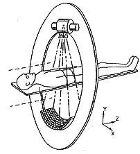

Operating Documentation
Direction 5193574-800, Rev# 22
LightSpeed 7.X Service Methods
Module Version 3.0, Version Date 5/17/10
Operating Documentation |
| Last Revised: | 28 September 2009 |
The VCT detectors are different from all previous detectors. Previous detectors had the detector modules assembled in detector manufacturing and is subsequently handled as one unit in the field. The VCT detectors have individually replacement detector modules. This means that a detector can effectively be repaired in the field instead of a complete detector replacement.
The Detector is comprised of 57 detector modules with each module attached to one or two A/D boards through a flex connection. For 64 slice, each module is attached to two A/D boards. For 32 slice, each module is attached to a single A/D board. The detector module, A/D board(s) and digital output cable are a single FRU.
X, Y & Z Axis: The X-Axis is the axis perpendicular to the path of x-rays. On the detector, this translates to the axis that follows the length of the detector along the collimator rails. The Z-Axis is the axis parallel to the patient. On the detector this translates to the axis along the width of the detector between the collimator rails. The Y-Axis is the axis formed by the path of the x-rays. On the detector this translates to the axis into the depth of the scintillator.
Illustration 1: Orientation Illustration

Field Replaceable Detector Module (FRDM): Refers to the Detector Diode, A/D board Sandwich Assembly and Digital cable. Also referred to as a Digital Module in error messaging.
Pack-Diode Assembly: Refers to the Diode-Assembly plus the coupled Scintillator Pack.
A/D Sandwich Assembly: Refers to the assembly of two A/D Boards along with Heat Sinks, Light-seal Hardware, Card Retention Hardware and Digital Cable Assembly.
Digital Detector: Refers to the Assembly that includes the Collimator, Digital Array of 57 FRDMs and A/D Card Cage Mechanical Assembly. Functionally it includes all components from the Detector Collimator through the A/D and the Digital Cable. (Up to but not including the DAS Backplane). In this document this will also be referred to as the Digital Detector.
Detector-DAS Assembly: Refers to the complete assembly of the Digital Detector with the digital DAS.
The Sherlock detector is identified by the DAStype = VDAS 64 or VDAS 32.
The Sherlock detector was the first modular detector that allowed the field to replace individual detector modules rather than the entire detector. This detector comes in two configurations, one with 32-slice functionality and one with 64-slice functionality.
The HALO detector is identified by the DAStype = HDAS.
The HALO detector introduced new lower power components, which drove lower heat output as compared to the Sherlock detector. Along with this new design, the system only needed one half the number of DAS DIFB boards to support the detector.
The Saturn detector is identified by the DAStype = HDAS_SATURN_64.
The Saturn detector is a new version of the HALO detector. The primary change is to the first 8 and last 9 detector modules (1-8, 49-57). These modules are “ganged” modules in that the cells are combined in pairs in the x direction to create a 1.25 x 0.625 cell size (8x64 cell array). This is a hardwired condition NOT using the FET modes. Data is duplicated in the DAS to recreate a 16x64 data set so the console sees the same data as a HALO detector. These modules also only have a single A/D board per module. This change does not impact IQ in that this outer region does not require the same high resolution as the central area for small to medium FOV's. The “A” side A/D board for the “ganged” modules is not needed so it was removed from the FRDM assembly. Due to this, the first 2 and last 3 DIFB boards only talk to half the number of A/D boards as compared to the rest of the detector.
The smallest element of the x-ray detector matrix is a detector pixel. The detector pixel as presented to the AD Board is a zero-biased photodiode whose current output (photo-current Ip) is proportional to the incident X-ray flux.
For 32-slice systems, Some applications will include the connection of multiple pixels in parallel to a single GDAS preamplifier channel. The connection means shall be a FET switch array, that is in the detector front-end module or on AD Board. FET switching is only applicable on the 32-slice system. The FET array will connect pixels in the ”Z” direction, which is the direction normally parallel to the longitudinal axis of the patient. Up to 2 pixels may be connected in this manner. The output of such interconnected pixels shall hereafter be referred to as a detector cell. If an application includes pixels, which are not connected to an output cell or preamplifier input, such pixels will be connected to electrical ground by the FET array. The disconnected pixels will present a FET off impedance to the GDAS ASIC on a 32-slice system.
For 64-slice systems, the combination of detector pixels (cells) occurs in the post data processing. All data is collected from the detector modules and sent back to the host. The host reconstruction software then manipulates the data to combine detector cells as appropriate for the requested scan.
The AD Board processes low current, analog data from 512 Detector outputs and converts these inputs into One digital serial streams.
Each of the 512 x-ray detector electrical current output signals to the converter board are termed a “DAS channel”
Illustration 2 is a block diagram of AD Board. 512 X-ray detector signals are going to 8 GDAS ASICs. Internal current references and a voltage reference are on the AD Board. The external current reference is for drift tracking is provided by the DCB. GDAS ASIC control signals are provided by the Digital Interface Board (DIFB). 2 temperature sensors and EEPROM for AD Board identification with I2C bus are on each AD Board.
Illustration 2: AD board Block Diagram

The A/D Board is used for both 64 slice system and also 32 slice systems. The A/D Board accommodates both a frontlit and backlit diode configurations. The 64 slice system uses a backlit diode and the 32 slice system uses a frontlit diode.
For 64 slice configuration with 64 slice Backlit Photo Diode, Two A/D Boards are used for One detector module which is 64 row by 16 channels. One A/D board consists two 32 row and 16 channel cells photo diodes which are tiled Z-axis direction. The A/D boards are referenced as an “A” and “B” A/D board and are physically combined into a 2 board sandwich. The “A” side A/D board handles for rows 1A to 32A of the detector module while the “B” side A/D board handles rows 1B to 32B. The only exception is for the HDAS_Saturn_64 detector ganged modules in slots 1-8 and 49-57. These only have one A/D board as there are only 512 pixels for each module.
For 32 slice configuration with 32 slice Frontlit Photo Diode, One AD Board is used for one detector module which is 32 row by 16 channels. One module consists 48 row and 16 channel cells photo diode. The FET Switch is located next to the photo diode. This FET switch is controlled by the DCB. The control signals, power and ground are provided by the DCB through the AD Board. In this configuration only the “A” side A/D board exists. The “B” side A/D board is a blank card in this system.
The A/D Board provides the capability to receive GDAS ASIC control data from the IFB and transmit GDAS ASIC acquired data to the IFB.
The A/D Board does not require any external Voltage Reference(s). The A/D Board generates its own voltage references for the GDAS ASIC from the power supply input voltages sent by the DIFB's.
The A/D Board generates its own internal current references. The A/D Board also requires an external current reference from the DCB.
The A/D Board is designed to use power supply voltages generated and sent over the digital cable from the DIFB's. The voltages sent are different depending on the detector type and can be seen and plotted using scan analysis looking at the aux channel data. Other tools such as DAStools also have the capability to query, check against specifications and report the voltages.
The -2.5V analog is brought up before the +2.5V analog, +2.5V digital, and +3.3V analog voltages. The maximum required elapsed time from power-on to full to specified detector performance is 1 hour. Time to meet full specified detector performance can be computed on the basis of two minutes warm-up per minute since power was last on or 1 hour, whichever is less.
The A/D boards have no jumpers or LED's. The system can not be run with the Air plenum off as there is significant heat generated by the A/D boards that will cause an over temperature condition very quickly. Test points exist on the board but are for engineering development use. Do not power on the DAS/Detector with the air plenum removed.
The Common Fan Control (CFC) and Detector Heater Control (DHC) board theory can be found in the Gantry Thermal Theory document.